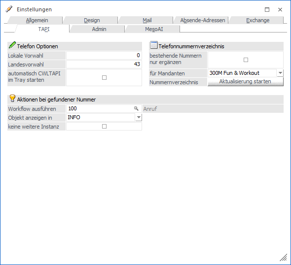
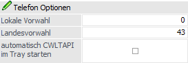
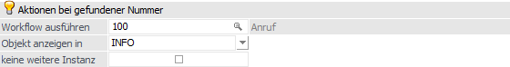
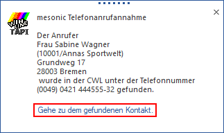
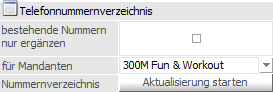

In dem Register "TAPI" könnten grundsätzliche Einstellungen für die TAPI-Kommunikation (d.h. zwischen WinLine und einer Telefonanlage per TAPI) definiert werden.
Hinweis
Die weiteren Einstellungen finden über das Programm "cwltapi.exe" (liegt im WinLine-Programmverzeichnis) statt.
Achtung
Für die Verwendung von TAPI mit der WinLine werden die Telefonnummern (in den Stammdaten) in einem einheitlichen Format benötigt.

Telefon Optionen

Ø Lokale Vorwahl
Hier wird die Ortsvorwahl des eigenen Standortes eingetragen.
Ø Landesvorwahl
An dieser Stelle erfolgt die Eingabe der Landesvorwahl des eigenen Standortes.
Ø automatisch CWLTAPI im Tray starten
Wird diese Option aktiviert, so wird zum einen beim Bestätigen mit dem Button "Ok" das Programm "cwltapi.exe" direkt im Tray gestartet und zum anderen wird das "cwltapi.exe" ab dann automatisch zusammen mit WinLine gestartet.
Aktionen bei gefundener Nummer

Ø Workflow ausführen
Wenn hier ein CRM-Workflow bzw. eine CRM-Aktion hinterlegt wird, so wird diese(r) bei einem Anruf über TAPI, wo die Nummer einem Kontakt zugeordnet werden konnte, automatisch gestartet.
Hinweis
Zur einfachen Auswahl des CRM-Workflows bzw. der CRM-Aktion stehen der Matchcode und die Autovervollständigung zur Verfügung.
Ø Objekt anzeigen in
Aus der Auswahlliste kann ausgewählt werden, in welchem Programmteil das Objekt geöffnet werden soll, welches durch den Anruf gefunden wurde. Dabei stehen zwei Möglichkeiten zur Auswahl:
ü INFO
In diesem Fall wird "nur"
der Stammdatensatz im WinLine INFO aufgerufen.
ü Kontaktestamm
In diesem Fall
wird - sofern vorhanden - direkt der Kontaktestamm aufgerufen.
Beispiel

Ø keine weitere Instanz
Wurde diese Option aktiviert, so wird bei einem Anruf, dessen Telefonnummer nicht im aktuellen Mandanten, sondern in einem anderen gespeichert ist, nicht automatisch eine neue Instanz mit jenem Mandanten gestartet. Stattdessen wird im Popup angezeigt, dass die Nummer aus einem anderen Mandanten stammt und man kann mit dem Link im Popup zu diesem Mandanten wechseln, wo dann der zur Nummer gehörende Datensatz angezeigt wird.
Telefonnummernverzeichnis

Die Verbindung zwischen eingehender Nummer und den Kontakten wird über ein separates Telefonnummernverzeichnis realisiert (Tabelle T196CMP in Systemdatenbank). Mit Hilfe der folgenden Einstellungen und Funktionen kann dieses Verzeichnis gefüllt werden.
Ø bestehende Nummern nur ergänzen
Ist die Option "bestehende Nummern nur ergänzen" aktiviert, dann werden beim Füllen des Verzeichnisses die Telefonnummern nur ergänzt, andernfalls wird das Verzeichnis vollkommen neu gefüllt, wobei alle Einträge vorher gelöscht werden.
Hinweis
Solange diese Option aktiviert ist, kann immer wieder der Button "Aktualisierung starten" ausgeführt werden, weil dann nur noch nicht erfasste Telefonnummern eingefügt werden.
Ø für Mandanten
Aus der Auswahlliste kann der Mandant gewählt werden, für welchen die Telefonnummer im Nummernverzeichnis aktualisiert werden sollen, wobei standardmäßig der erste Mandant vorgeschlagen wird. Bei der Auswahl "--- - alle Mandanten" werden alle Mandanten bei der Aktualisierung berücksichtigt.
Ø Nummernverzeichnis "Aktualisierung starten"
Durch Anklicken des Buttons "Aktualisierung starten" werden die Telefonnummern aus den ausgewählten Mandanten in die Telefontabelle (T196CMP) kopiert, wobei immer die Datensätze aus dem aktuellsten Wirtschaftsjahr geprüft werden.
Dabei werden alle Sonderzeichen entfernt und die Ländervorwahl bzw. die Vorwahl ergänzt. Sollte es den Fall geben, dass im Feld "Durchwahl" die gesamte Nummer steht, dann wird bei Durchwahlen, die größer als 4 Stellen sind, eine Warnung in das Übernahmeprotokoll geschrieben.
Hinweis
Das Füllen muss nur einmal durchgeführt werden. Danach werden Änderungen der Telefonnummern automatisch vom Programm erkannt und in der Tabelle gewartet.